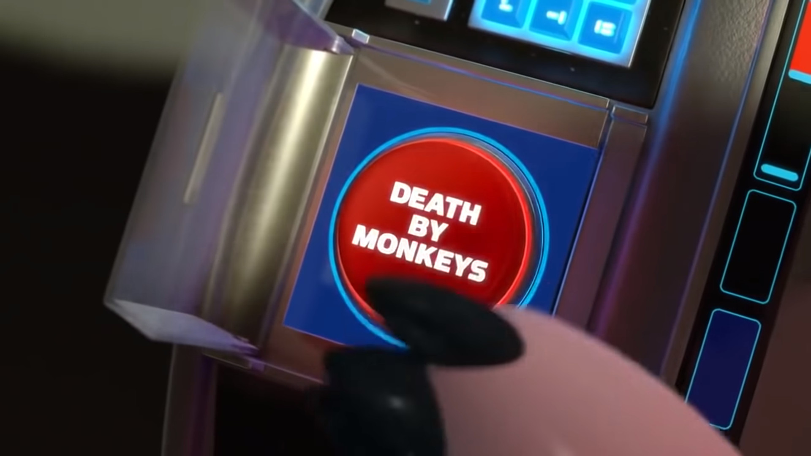
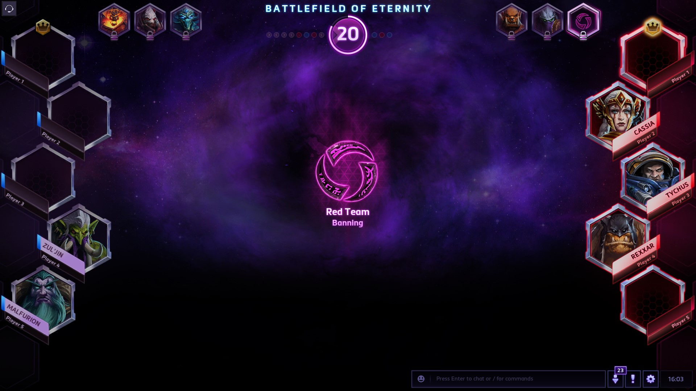
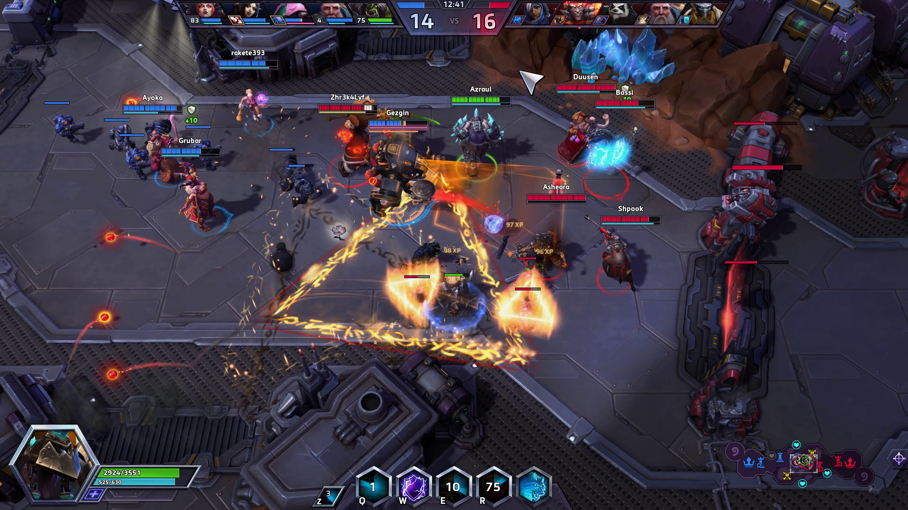
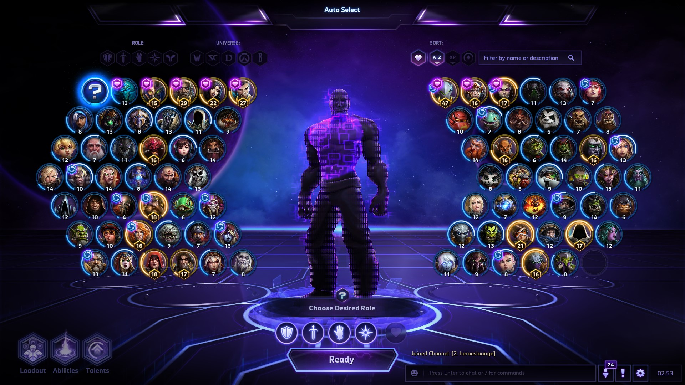

If you saw the video above, you might correctly assume that I play Heroes of the Storm in the amateur esports team Death by monkeys. We’re a group of players from different regions of Europe that happened to end up playing together in heroes lounge, Heroes of the Storms biggest amateur league. If you’re curious to what it exactly means to be involved in esports keep reading.
Death by monkeys was formed on the 25th February 2018 to participate in Season 6 of heroes lounge consisting of just 3 players that meet through discord on the day of signup deadline. As per Heroes lounge rules any team without 5 players will be assigned players at random. As luck had it we became a team of 5 strangers or as the team name suggests, 5 monkeys.
The name Death by monkeys comes from intro moments of Toy Story 3 where the evil Dr Pork Chop sentences the movies heroes to death with the press of a button that reads “Death by monkeys”.
When season 6 started we got seeded into division 5, at the time the lowest division which left its own bag of mixed feelings. But not having played competitively before we all agreed on that it is funnier to win than to lose and in case we do lose we can’t get any lower.
Like football sometimes the best defense is a good offence, and this is how the majority of season 6 played out for Death by monkeys. Winning 7 series out of 10 and taking 16 maps out of 20 possible we pushed ourselves into the top 3 of our division and a promotion for season 7 into division 4.
As in a real relationship a newly formed team has what you might call a honeymoon period, everyone is happy with everyone and all is good and well. Performance is high and any problems, if any even exists, are quickly resolved. Eventually however one must take the flight back home and so the honeymoon ends and for death by monkeys some problems arose, prominent amongst them was attendance for team practices.
Starting your pc and logging in for a game is about as demanding as it sounds. Organized play however means getting people together at the same time and place. A place can be a football field, ice hall, a gaming room or server and the strains of competitive play can come from many more directions than just being a player, be it coaching, organizing or other team management responsibilities. Amateurs usually doing all these things while still participating in the competition out of passion this is especially true for esports, a scene that is so young that things like team management are still developing at a professional level.
Tell your friends you can’t go out tonight because you have football practice is generally accepted but the same cannot be said when it comes to skipping a night out for practicing video games.
As season 6 ended 3 out of our 5 players resigned due to the commitment required and the remaining 2 monkeys decided to not leave next season to chance so we started to recruit. Unlike in a professional business you have a very strong advantage when looking at possible applicants for a esports team, you can tell them to start up the game and show you their worth which eliminates a lot of the risk when taking on new members and after 2 weeks of many interviews, chats and tryouts we were back to 5 monkeys and ready to go bananas in season 7.
One of the strongest factors to consider in an applicant is their skill of communication for it is a quality can’t spare in a fast-paced and team-oriented game like heroes of the storm as your team wins or falls depending on the information relayed between members.
In the new season we tried to learn from our mistakes and emphasized a lot on getting the team together, ultimately it is why we choose competitive play over standard play, to build our skills as a group and not just as individuals. We also started to prepare more, this involved mainly on assessing our opponents’ tactics and playstyle through databases such as the one provided by heroes lounge and keeping up to date with the so called meta of the game itself.
Metagame is the highest level of strategy in many complex games, metagame refers to any aspect of strategy that involves thinking about what your opponent is thinking you are thinking.
- urbandictionary.com
Our efforts bore fruit and season 7 division 4 concluded with Death by monkeys holding the 1st place. Currently we’re looking forward to season 8 and division 3 and with the structural changes and the addition of North America to the heroes lounge scene things can only get better!
Heroes of the Storm is free to play visit: https://heroesofthestorm.com/en-us/ to learn more
And we'll see you in the Nexus!